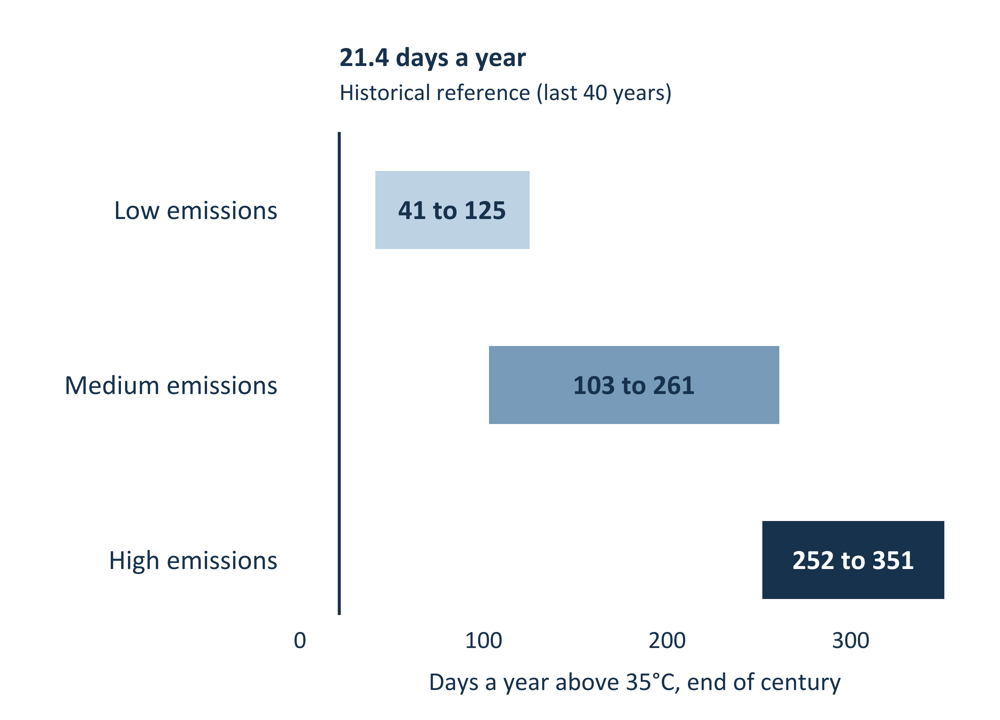
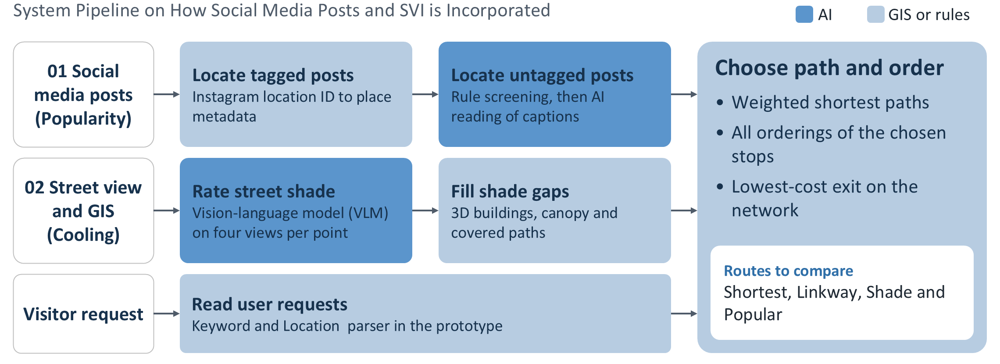
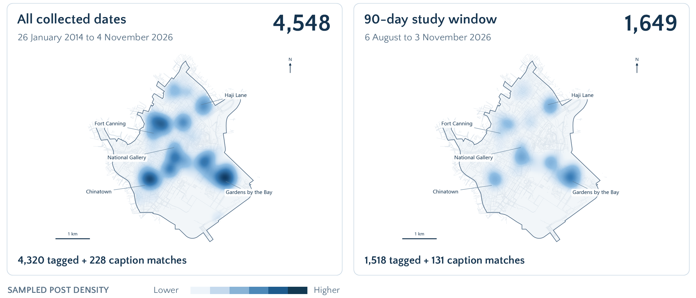
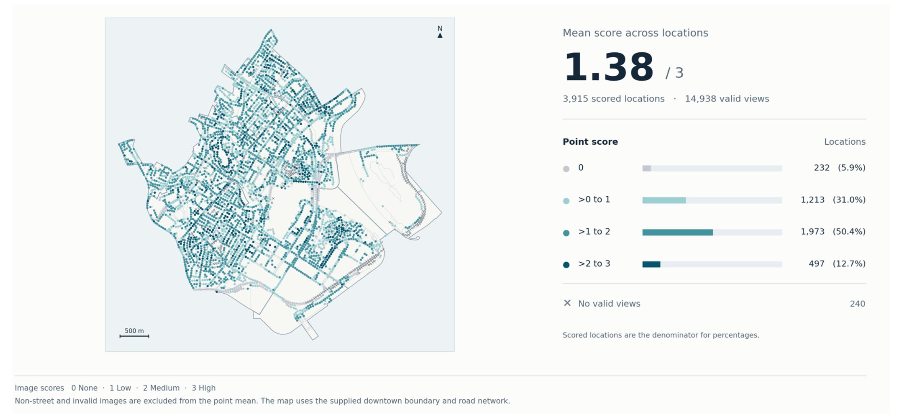
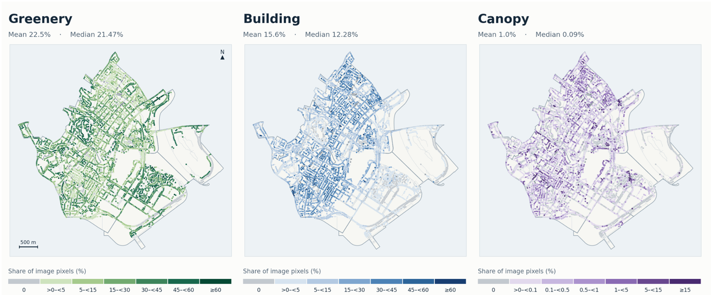
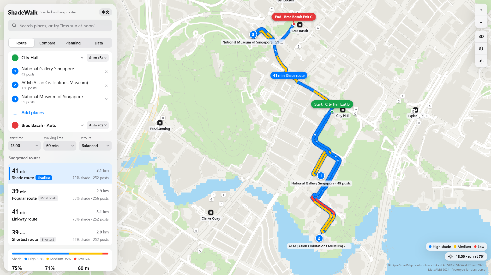
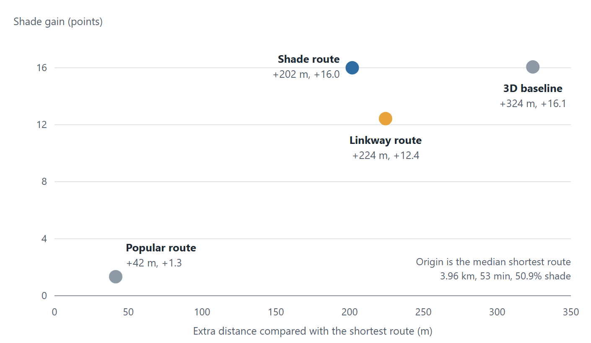
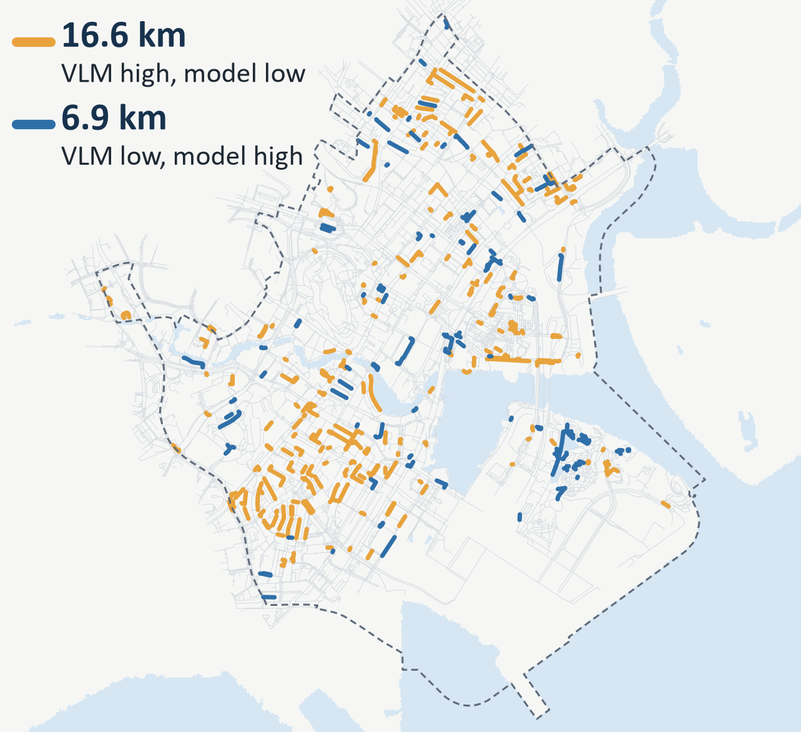

Summary
Walking between MRT stations and attractions in central Singapore often means long stretches in direct sun, yet navigation apps compare routes mainly by distance and time. ShadeWalk is a web prototype that suggests places to visit from public Instagram posts and compares shortest, covered-linkway, shade-oriented and popularity-oriented routes between them. AI is used for two tasks that fixed rules handle poorly, reading post captions for place evidence and rating shade in street view images. Across 300 test itineraries the shade route added a median 202 m of walking for 16.0 percentage points more shade. Covered linkways alone gave about 78% of that gain.
1. Problem Statement
1.1 Heat and walking in Singapore
Singapore is already hot for walking, and it is getting hotter. National projections suggest that days with a maximum above 35 °C, about 21 a year over the last four decades, could number between 41 and 351 a year by the end of the century, depending on the emission pathway (MSS & MSE, 2024; Figure 1).
People respond to this heat with their feet. In a route-choice experiment at Nanyang Technological University, participants accepted longer paths to stay out of the sun and valued 100 m in direct sun like about 116 m in full shade (Melnikov et al., 2022), and walkers in another dense subtropical city make similar trade-offs (Ma et al., 2025). For someone on a leisure walk, a slightly longer route can therefore be the better one, as long as it is shaded and passes places worth seeing.

1.2 The gap in current tools
Navigation tools tell walkers how far and how long, but not what the walk will be like. Two pieces of information are missing. The first is which nearby places people actually care about at the moment. Lists of points of interest show where places are, while location-based social media show where attention concentrates (Liu et al., 2022). The second is where the walk is shaded. Canopy maps look down from above, so they miss awnings, overhangs and covered walkways and say little about whether shade continues along a trip (Zhao et al., 2026). Street view imagery, by contrast, records the street at a pedestrian’s eye level and has already been used to measure the shade of street trees (Li et al., 2018; Biljecki & Ito, 2021). Tourist route planning is a well-studied problem (Gavalas et al., 2014), yet these two kinds of evidence are rarely brought together in one walking tool for MRT users.
1.3 Intended users and aim
We designed ShadeWalk first for visitors and residents who set out on foot from an MRT station with limited time, such as a visitor who arrives at City Hall at 13:00 with an hour to spare. Singapore received about 16.9 million international visitors in 2025 (STB, 2026). Planners are a second audience, because the same layers reveal popular streets that lack shade, in support of the Walk-Cycle-Ride aim of the Land Transport Master Plan 2040 (LTA, 2019).
Our aim was a transparent prototype that suggests places from social media evidence and sets a shade-oriented route beside the shortest one, so that users can see what a few extra minutes of walking buy in shade.
2. Proposed Solution
2.1 Approach
ShadeWalk answers the two gaps in Section 1.2 with two separate decisions (Figure 2). Social media posts decide where to stop, and shade decides how to walk between the stops. At each stage we chose the simplest method that could do the job. AI enters only where the input is unstructured text or an image, namely Instagram captions without a location tag and street view images that need a shade rating. Data collection, spatial joins, a shade model for unrated streets and the routing itself rely on GIS and fixed rules.
For the same stops the prototype computes four routes, namely the shortest route and routes that prefer covered paths, shaded streets or streets near popular places. A fifth route, guided only by a 3D model of building and tree shade, serves as a baseline. Because every route shares one network and one cost rule, any difference between two routes comes from the shade or popularity layer alone, and every score can be traced back to its source.

2.2 Study area and data
We worked in seven Central Area planning zones covering 12.60 km² with 10 MRT stations and 54 exits (Figure 3). The walking network comes from OpenStreetMap, downloaded on 4 November 2026, and has 12,179 segments and 8,915 nodes with a total length of 467.4 km. Covered linkways, footpaths and pedestrian overhead bridges and underpasses come from LTA DataMall (September 2026 release), and station exits, parks and tourist attractions come from data.gov.sg. Building footprints and heights from OpenStreetMap, the Meta/WRI 1 m canopy height map (Tolan et al., 2024) and ESA WorldCover 2021 feed a 3D shade model for 9:00, 13:00 and 17:00. The social media data are public Instagram posts collected through Apify, with a snapshot date of 4 November 2026, and street view images were sampled along the network [TBC image source and how the images were obtained]. All distances were computed in SVY21 (EPSG:3414), and Appendix B lists dates, versions and licences.
3. AI Methodology
Table 1 summarises each processing step, whether it uses AI and the simpler method it is measured against. The rest of this section follows the data through the pipeline, from posts to place popularity, from images to street shade and from both layers to routes. Model names, versions and instructions are listed in Appendix C.
| Step | Method | AI or rules | Output | Non-AI baseline |
|---|---|---|---|---|
| Place tagged posts | Instagram location ID to place metadata | Rules | Point at the tagged place | Not needed |
| Place untagged posts | Dictionary screening, then reading of captions in context | Rules, then AI | Place link with confidence and post role | Dictionary screening alone |
| Rate street shade | Vision-language model on four views per point | AI | Shade level 0–3 per point | 3D shade model, covered linkways |
| Describe street scene | Prompt-based segmentation | AI, descriptive only | Pixel shares of 20 classes | Not used in routing |
| Fill shade gaps | 3D building and canopy shadow model | Rules | Shaded share per segment and time | Not needed |
| Choose path and order | Weighted shortest paths, all stop orderings | Rules | Four routes | Shortest route |
| Read user request | Keyword and place-name parser | Rules | Stops and settings | Not needed |
3.1 Popularity from social media
We began with place names. The 331 named places in OpenStreetMap with leisure, tourism, historic, shop or place tags inside the study area supplied the names and hashtags for searches of public Instagram posts through Apify. After duplicates were removed, the final snapshot of 4 November 2026 held 10,692 unique posts. A search term says nothing about where a post was made, so each post had to be placed from its own data.
Location tags did most of the work. 6,526 posts carried an Instagram location tag with coordinates, which a rule resolved to the place metadata. Of these, 4,320 fell inside the study area, 894 were tagged to named places outside it and 1,312 had only a city or country tag and were left out.
The remaining 4,166 posts had no usable coordinates, and this is where AI came in (Figure 4). A local dictionary of the 331 place names and their aliases first screened every caption by plain string matching. It found 559 captions that named a single place together with a text cue suggesting a location, and four more were added as test cases, while most other captions named no listed place (2,508) or several places (239). An AI assistant [TBC model and version] then read the 563 candidates in context. For each caption it recorded whether the post was really about the named place, a confidence level, the role of the post (for example a personal visit, a promotion or an event report) and the literal text supporting the decision. It accepted 490 captions as place associations, and we added only the 228 high-confidence personal or scene posts to the map, keeping promotional and informational posts in a separate layer. The map point is always the existing OpenStreetMap point, so the AI decides the link but never produces coordinates.
We used AI at this step because a dictionary finds names but cannot tell a visit from an advert, a product name or a passing mention. A caption describing a photo spot at the Fort Canning tree tunnel places the post, while a caption listing two destinations does not. Reading context is what a language model does well, and the dictionary stage keeps the task small enough to check by hand.
The result is 4,548 placed posts inside the study area, dated from January 2014 to November 2026. Route suggestions use a fixed 90-day window from 6 August to 3 November 2026, with 1,649 posts at 274 places (Figure 5). Popularity is simply the post count for a stated period, which keeps it transparent and easy to check, and the 466 Instagram location tags and 331 OpenStreetMap places are stored as separate layers.

3.2 Shade from street view imagery
For shade we looked at the street from where people walk. Sampling points were placed about every 40 m along the walking network, giving 4,176 points after duplicates were removed. At each point four street view images faced forward, backward, left and right, for 16,704 images, of which 15,019 (90%) were valid. 77% of the images date from 2024 or later and 13% from before 2020.
A vision-language model (VLM) [TBC model, version and prompt] rated the shade visible to a pedestrian in each image as none, low, medium or high. We coded the ratings 0 to 3 and averaged them over the valid street images at each point. Images flagged as invalid or not showing a street were left out, and the 240 points without a valid image stay blank, so 3,936 points received a score (Figure 6).

To see what the VLM was responding to, a prompt-based segmentation model built on the Segment Anything approach [TBC model] measured the pixel share of 20 classes in each image, including tree, shelter, umbrella, canopy, shadow, sky, building and flyover (Figure 7). These shares describe the scene and do not enter the score. Across points, the rating correlates with the share of visible sky at −0.51 and with visible trees at 0.17.

The point scores then had to be carried onto the network. Each 5 m piece of a segment takes the nearest scored point within 20 m, half the point spacing, while indoor, corridor and pedestrian tunnel segments are not matched. In total 3,844 points are used, covering 8,429 of the 12,179 segments and 250.9 km of the 467.4 km network (53.7%).
Where no scored point is close enough, the prototype falls back on the share shaded by buildings and trees in the 3D model at the chosen departure time. Covered paths from LTA and OpenStreetMap count as fully shaded, because a camera on a car cannot see under a linkway. The shaded metres of a segment are therefore its covered metres plus the remaining length times a shade fraction, which is the VLM level divided by 3 on the scored part and the 3D model share elsewhere.
We chose a VLM over segmentation alone because counting pixels of trees or sky cannot tell whether an awning or a row of trees actually shades the footpath, and common label sets lack classes for shelters and canopies. A VLM can be asked this question directly in plain language, and a four-level answer is easy to aggregate. Visual assessment of streetscapes for heat is an active research field (Yang et al., 2025). The 3D model alone and covered linkways alone serve as the non-AI baselines.
3.3 Routing rules
Once both layers are in place, routing needs no AI. The network is treated as undirected, and each segment has a length L and a number of “good” metres G whose meaning depends on the route. For the shade route G is the shaded metres described above, for the linkway route the covered metres and for the shortest route zero. For the popular route G is the length weighted by log(1 + posts) / log(1 + the 98th percentile of posts), capped at 1, where the posts belong to places within 60 m. The cost of a segment is
cost = ((L − G) × w + G) × p
where w is 1.5, 2.5 or 4 for the Shorter, Balanced and Detours OK settings and p is a penalty of 1.5 on primary roads, 1.2 on service roads and 1 elsewhere. A higher w makes exposed metres more expensive, so the route accepts longer detours for shade.
Users can choose up to six stops or ask for suggestions. The suggestion rule takes places in order of post count, adds them one at a time while keeping them at least 200 m apart, and stops at three places or when the walking limit would be exceeded at 75 m per minute. For the chosen stops every ordering is tried using weighted shortest paths, and the route ends at the lowest-cost exit among 138 exits of 27 stations around the study area. The search box reads place names and simple keywords with a rule-based parser.
4. Prototype and Demonstration
4.1 How to use the app
The prototype runs in any web browser at the live demo, opening in Chinese with an EN button for English. A user picks a start station and exit, a departure time of 9:00, 13:00 or 17:00, a walking limit of 30, 60 or 90 minutes and a detour setting, then searches for stops by name, picks them on the map or asks for suggestions based on post counts. The page lists the four routes with walking time, distance, shaded share and nearby post counts and draws them on the map. Other map styles colour every street by its shade level at the chosen time or show a heat map of sampled posts, and a Compare tab adds the 3D-model baseline.
4.2 Worked example
Figure 8 shows the opening view of the site, which is also a typical case. A visitor starts at City Hall Exit B at 13:00 with a 60-minute limit and the Balanced setting, and the page opens with three museums as stops, namely the National Gallery Singapore (49 posts in the 90-day window), the Asian Civilisations Museum (120) and the National Museum of Singapore (59). The shortest route is 2.9 km and 39 minutes long with 55% of its length in shade, and its longest exposed stretch is 80 m. The shade route is 3.1 km and 41 minutes long with 75% in shade, and its longest exposed stretch falls to 60 m. For about two minutes of extra walking, the visitor gains 20 percentage points of shade. Both routes end at Bras Basah Exit C, the linkway route takes almost the same path as the shade route, and 71% of the shade route is rated from street view, with the rest from the 3D model.

5. Critical Evaluation
5.1 Results
One example is not enough to judge the routes, so we generated 300 itineraries with the site’s own routing code. Each starts at a random station in the study area and visits three of the most-posted places, and each was kept only if its shortest route fits within 60 minutes (Appendix D).
The median shortest route was 3.96 km and 53 minutes long with 50.9% of its length in shade. Against it, the shade route added a median 202 m and 16.0 percentage points of shade. The linkway route added 224 m for 12.4 points and the route guided only by the 3D model added 324 m for 16.1 points, while the popular route barely moved, adding 42 m and 1.3 points (Figure 9). Long exposed stretches also became rarer, as the number of routes with 100 m or more in the sun fell from 269 for the shortest routes to 168 for the shade routes. The detour setting behaves as intended, with shade gains of 9.1, 16.0 and 18.8 points as the weight rises (Table 2).
The two shade layers lead walkers along different streets. Routes guided by the VLM layer and by the 3D model share 57% of their length. Street view images carry no time of day, so routes guided by the VLM layer stay steadier through the day, keeping 59% and 76% of the 13:00 path at 9:00 and 17:00, against 40% and 37% for routes guided by the 3D model. Detours also cost time, and 66 of the 300 shade routes run past the 60-minute limit because the limit is applied before the shade detour is added.

| Detour setting | Weight w | Extra distance (m) | Shade gain (points) |
|---|---|---|---|
| Shorter | 1.5 | +60 | +9.1 |
| Balanced | 2.5 | +202 | +16.0 |
| Detours OK | 4 | +322 | +18.8 |
5.2 What AI added beyond the non-AI baselines
Setting each AI layer against a simpler alternative shows where AI adds value in this prototype. On shade, covered linkways alone, with no AI, deliver about 78% of the gain of the VLM-guided route (12.4 of 16.0 points), and the 3D model alone gives a similar gain with a longer detour. The VLM layer and the 3D model agree only weakly, with a rank correlation of 0.21 over 264.2 km of comparable segments at 13:00, and Figure 10 maps where they differ most, namely 16.6 km rated high by the VLM and low by the model and 6.9 km the reverse. The VLM looks from a pedestrian’s height and can register awnings and overhangs that a building and canopy model leaves out, while the 3D model follows the sun through the day. Our results therefore point to a layered design, with linkways as the base, the 3D model for time of day and the VLM layer for street-level features.
On the social media side, AI reading added 228 of the 4,548 placed posts (5%), or 131 of the 1,649 in the 90-day window. Its value lies in sorting rather than finding, since the dictionary had already found all 563 candidates. Dictionary screening alone would have mapped every one of them, including 73 captions that were not about the named place and 157 promotional posts among the 490 accepted links. Because AI reading kept only the 228 high-confidence personal or scene posts, the caption-based part of the popularity layer counts visits and scenes rather than adverts.

5.3 Limitations and challenges
Three challenges shaped the build. The first was that most collected posts could not be placed directly, since 4,166 had no usable coordinates and a further 1,312 were tagged only to a city or country. The two-stage caption reading in Section 3.1 recovered the posts that name a single place. The second was that street view, taken from a car, cannot see under covered linkways or inside buildings, and 240 sampling points had no valid image. We therefore counted covered paths from LTA as fully shaded and let the 3D model fill the remaining gaps. The third was that the data sources come under different terms. According to the project data notes, LTA DataMall data are for personal, non-commercial use and redistribution needs written permission, and street view imagery may carry its own restrictions [TBC confirm terms], so the public repository holds processed layers and anonymised counts.
The data also carry known biases. Post counts reflect posting habits as well as visits and tend to over-represent landmarks (Song et al., 2020). A posting date is not a visit date, and tagged posts were not screened for adverts in the way caption posts were. Street view covers 53.7% of the network, the images differ in age and their time of day is unknown. The VLM level also tracks open sky closely, which is related to but not the same as shade on the footpath, and VLMs are known to be weaker on subjective judgements of urban scenes (Mushkani, 2025).
Two design choices bound the results. Stops are chosen from post counts before any route is computed, so shade does not influence which places are suggested, and access details such as entrances, opening hours and steps are not modelled. In the evaluation each route is scored with the layer that guided it, so the gains in Section 5.1 show how well each route uses its own layer, while the comparison between layers in Section 5.2 shows how far the layers agree.
5.4 Potential improvements
The evaluation also tells us where to go next. A field or manual check of shade should come first, with sample points drawn from the streets in Figure 10 where the two layers disagree most, alongside a human review of a sample of AI caption decisions to measure their accuracy. The routing can then improve in three ways, namely re-checking the time limit after the shade detour, letting shade enter stop selection and combining the VLM rating with the time of day from the 3D model in one shade score. A language model could replace the keyword parser by mapping free-text requests to the existing settings while the routing stays rule-based, and open imagery such as Global Streetscapes (Hou et al., 2024) would make the shade layer easier to publish and update. Finally, a planning view of busy streets with little shade follows directly from the existing layers, since 1.5 km of the 11.0 km busiest streets had low shade at 13:00 in the evaluation.
6. Project Repository
- Report
- https://zhangyihan-1021.github.io/shadewalk-sg/report.html
- Live demo
- https://zhangyihan-1021.github.io/shadewalk-sg/
- Repository
- https://github.com/ZhangYihan-1021/shadewalk-sg
- Evaluation
- https://github.com/ZhangYihan-1021/shadewalk-sg/tree/main/evaluation
The repository holds the web prototype, this report and the route evaluation. The prototype is a static page that runs in any modern browser without installation. Its data files contain the processed network attributes, shade levels per segment, station exits and anonymised daily post counts per place, and every route in the live demo is computed from these published files. The evaluation folder holds the script behind Section 5.1 and its results (Appendix D). To respect the data licences and the privacy of Instagram users, captions, usernames, post links, raw LTA files, raw Instagram exports, street view images and the data-building scripts that read them stay with the group.
Appendices
The appendices are not counted in the word or page limit.
Appendix A. References
- Biljecki, F., & Ito, K. (2021). Street view imagery in urban analytics and GIS: A review. Landscape and Urban Planning, 215, 104217.
- Gavalas, D., Konstantopoulos, C., Mastakas, K., & Pantziou, G. (2014). A survey on algorithmic approaches for solving tourist trip design problems. Journal of Heuristics, 20(3), 291–328.
- Hou, Y., Quintana, M., Khomiakov, M., Yap, W., Ouyang, J., Ito, K., Wang, Z., Zhao, T., & Biljecki, F. (2024). Global Streetscapes: A comprehensive dataset of 10 million street-level images across 688 cities for urban science and analytics. ISPRS Journal of Photogrammetry and Remote Sensing, 215, 216–238.
- Land Transport Authority. (2019). Land Transport Master Plan 2040.
- Li, X., Ratti, C., & Seiferling, I. (2018). Quantifying the shade provision of street trees in urban landscape: A case study in Boston, USA, using Google Street View. Landscape and Urban Planning, 169, 81–91.
- Liu, Z., Wang, A., Weber, K., Chan, E. H. W., & Shi, W. (2022). Categorisation of cultural tourism attractions by tourist preference using location-based social network data: The case of Central, Hong Kong. Tourism Management, 90, 104488.
- Ma, X., Zeng, T., de Dear, R., Xie, Y., Yuan, C., & Lu, S. (2025). Active route choice to minimize pedestrian thermal discomfort in a high-density subtropical city. Sustainable Cities and Society, 131, 106697.
- Melnikov, V. R., Christopoulos, G. I., Krzhizhanovskaya, V. V., Lees, M. H., & Sloot, P. M. A. (2022). Behavioural thermal regulation explains pedestrian path choices in hot urban environments. Scientific Reports, 12, 2441.
- Meteorological Service Singapore & Ministry of Sustainability and the Environment. (2024, January 5). Latest climate projections for Singapore show intensifying urban heat and more wet & dry extremes [Joint news release].
- Mushkani, R. (2025). Do vision-language models see urban scenes as people do? An urban perception benchmark. arXiv:2509.14574 [Preprint].
- Singapore Tourism Board. (2026, May 8). Speech by Ms Melissa Ow, Chief Executive, at the Tourism Industry Conference 2026.
- Song, X. P., Richards, D. R., He, P., & Tan, P. Y. (2020). Does geo-located social media reflect the visit frequency of urban parks? A city-wide analysis using the count and content of photographs. Landscape and Urban Planning, 203, 103908.
- Tolan, J., Yang, H.-I., Nosarzewski, B., Couairon, G., Vo, H. V., Brandt, J., Spore, J., Majumdar, S., Haziza, D., Vamaraju, J., Moutakanni, T., Bojanowski, P., Johns, T., White, B., Tiecke, T., & Couprie, C. (2024). Very high resolution canopy height maps from RGB imagery using self-supervised vision transformer and convolutional decoder trained on aerial lidar. Remote Sensing of Environment, 300, 113888. [TBC verify this entry]
- Yang, S., Chong, A., Liu, P., & Biljecki, F. (2025). Thermal comfort in sight: Thermal affordance and its visual assessment for sustainable streetscape design. Building and Environment, 271, 112569.
- Zhao, H., Zhao, L., Ou, J., Meng, Q., Niu, J., & Brown, R. D. (2026). Summer shading strategies for urban sidewalks: Shade-layout control metrics oriented to pedestrian whole-trip thermal comfort. Sustainable Cities and Society, 136, 107019.
Appendix B. Data sources and licences
| Source | Content used | Version or date | Licence or terms |
|---|---|---|---|
| OpenStreetMap | Walking network, buildings, named leisure places | Downloaded 4 Nov 2026 | ODbL 1.0, © OpenStreetMap contributors |
| LTA DataMall | Covered linkways, footpaths, pedestrian overhead bridges and underpasses | September 2026 release | LTA DataMall terms of use [TBC whether processed data may be published] |
| data.gov.sg | SLA National Map Line, LTA MRT station exits, STB tourist attractions, NParks parks | [TBC download date] | data.gov.sg terms [TBC licence name] |
| Meta/WRI canopy height (Tolan et al., 2024) | 1 m tree canopy height | 2024 release, imagery mostly 2017–2019 | CC BY 4.0 |
| ESA WorldCover | 10 m land cover, tree class | 2021, v200 | CC BY 4.0 |
| Instagram, collected with Apify | Public posts, location tags and captions | Snapshot 4 Nov 2026 | Platform terms apply. Only anonymised counts are published |
| Street view imagery | Four views at each of 4,176 points | 77% from 2024 or later | [TBC source and terms] |
| MSS and MSE (2024) | Projected very hot days (Figure 1) | January 2024 | Cited source |
Appendix C. AI models and instructions
| Step | Model and version | Date run | Instruction and output |
|---|---|---|---|
| Caption reading | [TBC] | [TBC, about 4–6 Nov 2026] | For each of the 563 candidate captions, the assistant recorded a decision, a confidence level, the content role and the literal caption evidence (review method “assistant_read_caption_text” in the package). [TBC whether a written instruction was used] |
| Street view shade rating | [TBC] | [TBC] | One rating per image of none, low, medium or high, coded 0–3. [TBC prompt text, and the per-image file shade_assessment_vlm.csv] |
| Segmentation | [TBC, Segment Anything based] | [TBC] | Text prompts for 20 classes, namely tree, shrub, grass, bush, shelter, umbrella, canopy, water, fountain, sky, ground, pavement, road, shadow, vehicle, curtain, building, flyover, window and door. Output is the pixel share of each class per image. |
Appendix D. Route evaluation method
The evaluation script, in the evaluation folder of the repository, runs in the browser console on the live demo and calls the site’s own routing function, so the routes are those a user would get. Each draw takes a random start among the 10 stations in the study area and three different stops at least 200 m apart from the 60 Instagram location tags with the most posts between 6 August and 3 November 2026. A draw is kept only if its shortest route fits the 60-minute limit at 75 m per minute, and as on the live demo each route ends at the lowest-cost exit among the 138 exits of 27 stations. With the fixed seed 595813, 300 itineraries were kept from 1,958 draws. Routes use 13:00 and the Balanced setting (w = 2.5) unless stated otherwise, and medians use the nearest rank. The script was run twice with identical results apart from the time stamp, and four itineraries recomputed on the live demo matched its output exactly. The stops are a random draw rather than real itineraries, and tags naming one venue, such as different spellings of Gardens by the Bay, are kept separate. The group presentation used an earlier run on a build in which routes ended only at the 10 study-area stations, so its figures differ slightly (for example +187 m and 14.5 points for the shade route).